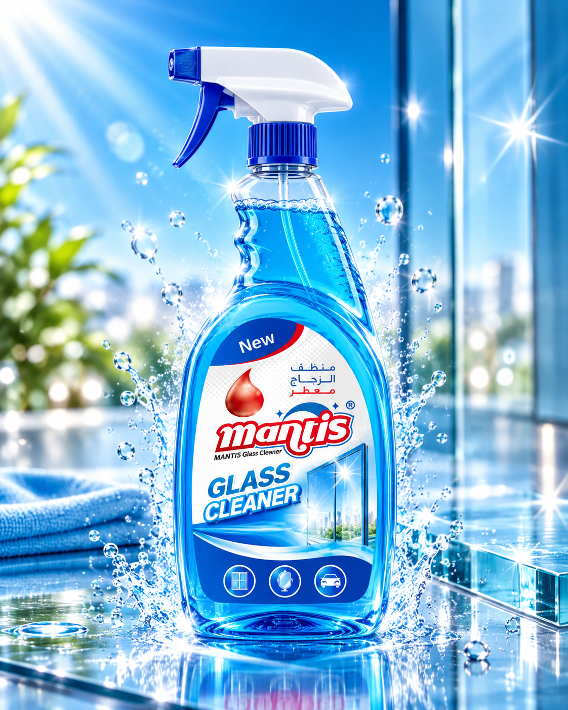
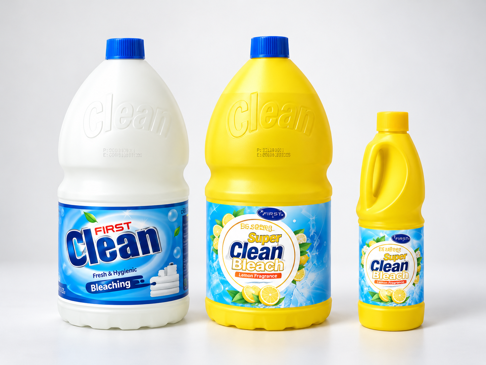
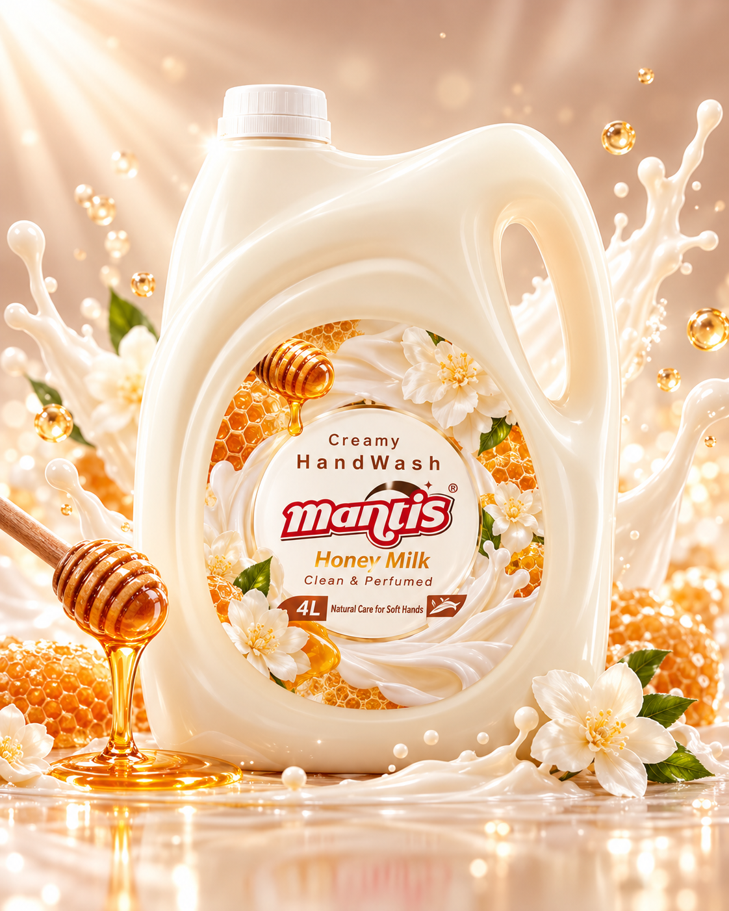

پاکآفرین پویا
پاکآفرین پویا با زیرساخت تولید فعال، دانش فنی و تجربه عملی در صنعت شوینده، سبدی متنوع از محصولات خانگی و تخصصی را تولید میکند. رویکرد مجموعه بر کیفیت پایدار، بستهبندی مناسب بازار، توسعه شبکه توزیع، صادرات، تولید سفارشی و Private Label استوار است.
13+SKU معرفیشده
0.5–3.75Lبازه این نسخه
B2Bهمکاری و تولید سفارشی


